01 · Abrir la webPantalla de arranque con el nombre · 3,6 s

02 · Primer usoBienvenida con la frase guía · 5,5 s03 · Icono de arranqueFavicon animado o PWA mientras carga · 3 s04 · CargandoCarga genérica de la app y de pantallas · 1,4 s05 · EsperandoEsperas cortas: abrir un elemento, una consulta · 1,8 s06 · IndexandoReconstrucción del índice de búsqueda · 2,4 s07 · BuscandoMientras se filtran resultados · 1,3 s08 · Guardando datoLa captura se escribe en el espacio · 2,2 s09 · GuardadoConfirmación tras guardar o exportar · 1,8 s10 · Evidencia vinculadaUn elemento entra en una investigación · 2,6 s11 · AnalizandoUn lector calcula derivados · 1,6 s12 · DetectandoHuella de error o veredicto · 2,6 s13 · Leyendo datosCSV, JSON o DuckDB · 0,8 s14 · Copia al díaCopia de seguridad completada · 3 s15 · ErrorNo se pudo leer o importar · 3,2 s16 · Sin conexiónSin red para enriquecer · 2,4 s17 · ComparandoDos series se alinean y sale el veredicto · 3 s18 · ProcesandoPandoc, OCR, tareas largas · 2,2 s19 · ExportandoGeneración del ZIP o del documento · 2,4 s20 · Rimor contestaSe compone la respuesta en el feed · 2,4 s